Informe coleta, destino e o que precisa transportar.
Motoboy, utilitários ou caminhão para resolver rápido? A K.L tem a solução para você.
Motoboy, utilitários, furgões, caminhões e carretas para Campinas, região, interior de São Paulo e outras rotas sob consulta.
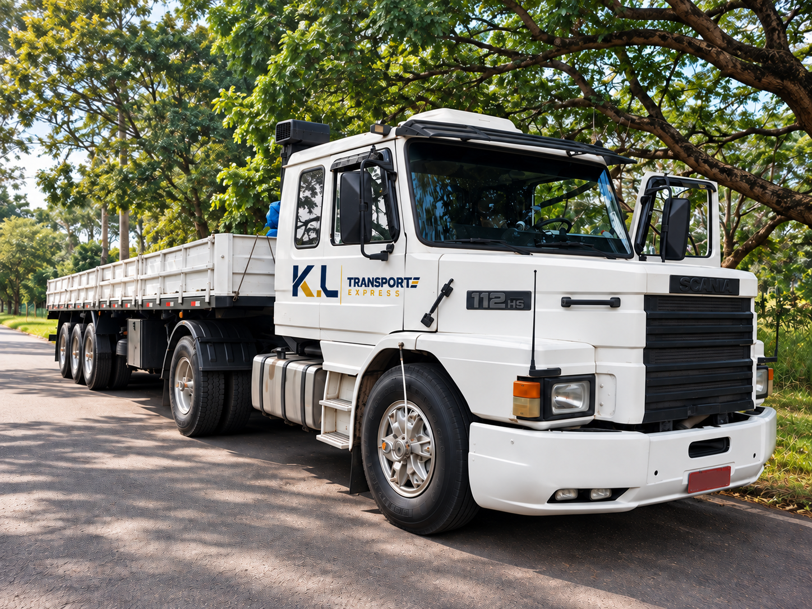
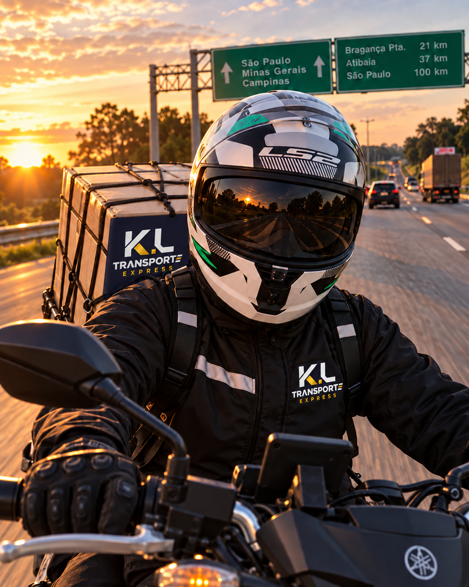
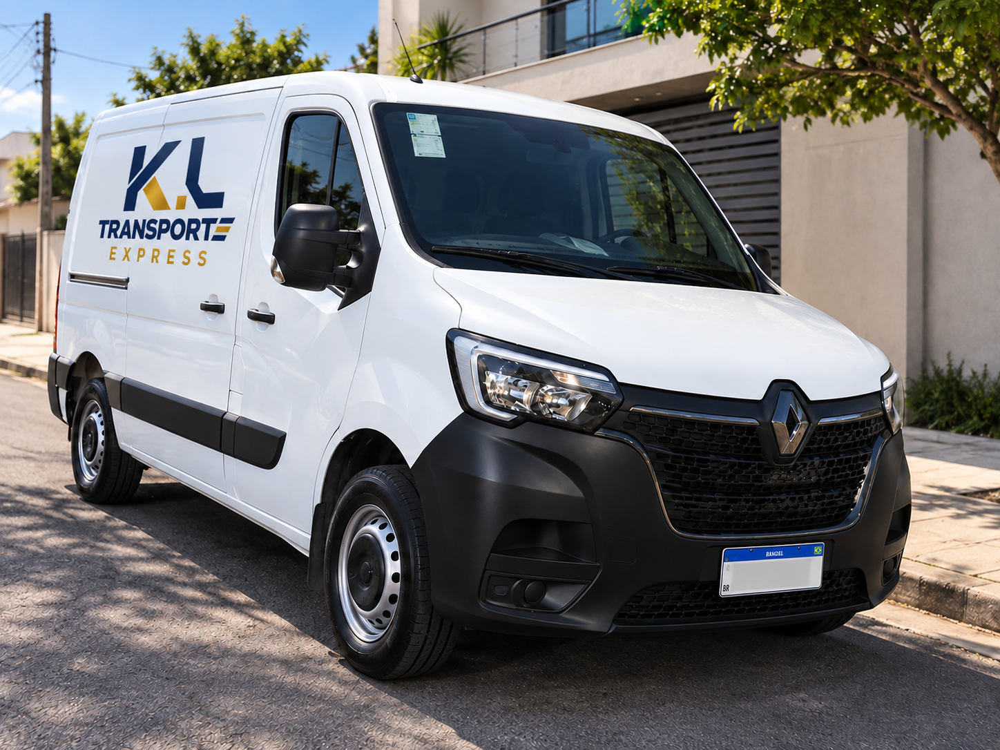
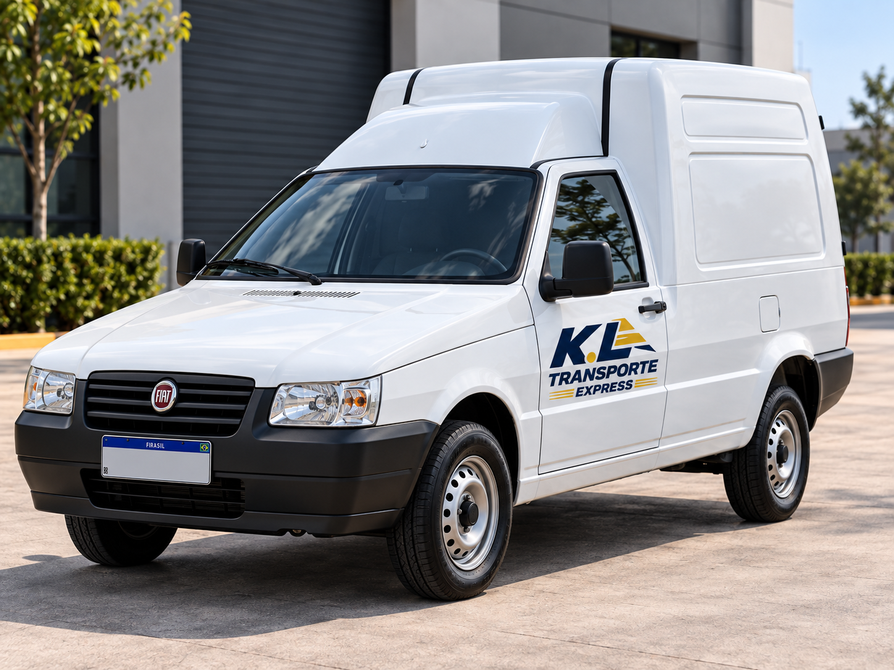
O que você precisa transportar hoje?
As principais opções da K.L já estão aqui. Escolha o veículo e siga direto para organizar sua cotação.
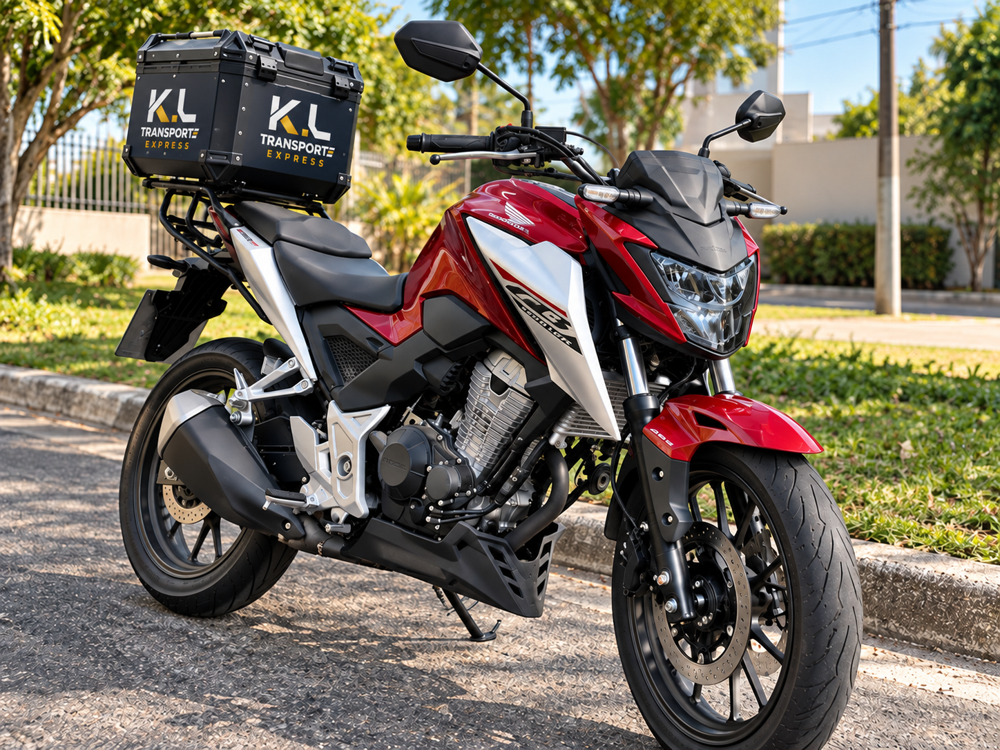
AgilidadeMotoboy
Documentos, peças, pequenos volumes e entregas urgentes.
Pedir Motoboy →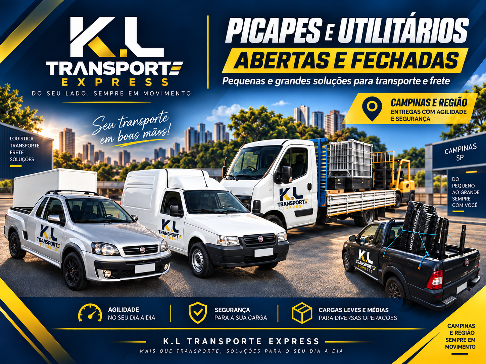
Carga leve e médiaUtilitários
Fiorino, picape, mercadorias, caixas, peças e operações comerciais com praticidade.
Cotar utilitário →Mais espaçoVan / Furgão
Carga fechada e protegida para volumes e operações dedicadas.
Cotar Furgão →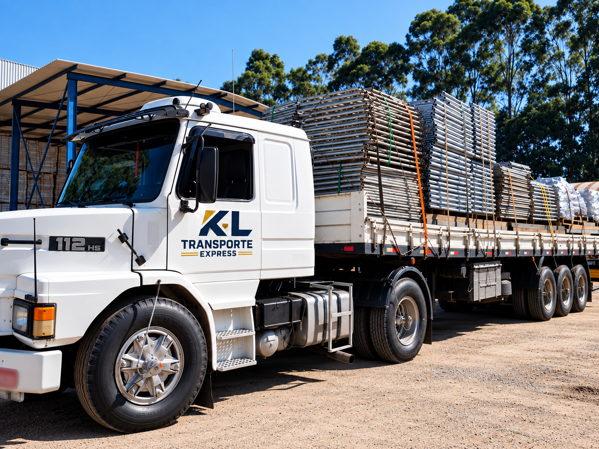
Carga pesadaCaminhão / Carreta
Estrutura para operações industriais e transportes de maior porte.
Consultar transporte →Do pedido à entrega, sem enrolação.
Você informa a necessidade. A K.L confirma disponibilidade, condição do serviço e segue com a operação após sua aprovação.
A K.L avalia rota, carga, veículo e condição do serviço.
Com a aprovação, a operação é direcionada para retirada.
A carga segue para o destino e responsável informado.
Quer comparar cada opção com mais detalhe?
Explore os veículos e veja qual solução combina melhor com a sua coleta ou entrega.
01
Motoboy
Agilidade para documentos, peças e pequenos volumes em Campinas, região e viagens sob consulta.
- Documentos e malotes
- Peças e pequenos volumes
- Coletas e entregas urgentes
02
Utilitários
Fiorino e picape para mercadorias, peças, caixas e cargas leves ou médias.
- Boa capacidade com operação ágil
- Mercadorias, peças e caixas
- Campinas, região e viagens sob consulta
03
Van / Furgão
Mais espaço e proteção para caixas, equipamentos, mercadorias e operações comerciais dedicadas.
- Carga fechada e protegida
- Operações comerciais
- Transporte dedicado
04
Caminhão e Carreta
Estrutura para grandes cargas, equipamentos, operações industriais e transportes de maior porte.
- Estruturas e andaimes
- Cargas industriais
- Operações dedicadas sob consulta
Grandes cargas pedem estrutura de verdade.
Caminhões e carretas para transportes dedicados, cargas industriais e diferentes perfis de mercadoria, sempre sob consulta.
Organizar cotação de carga →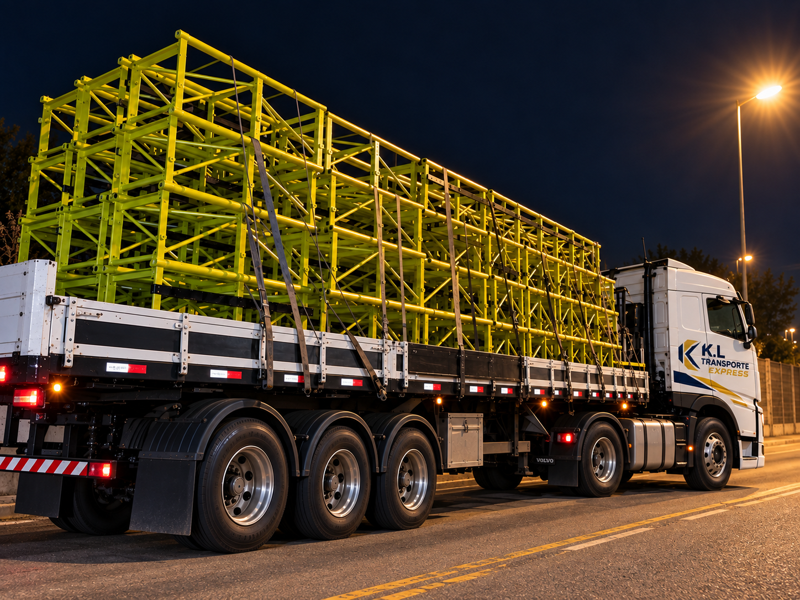
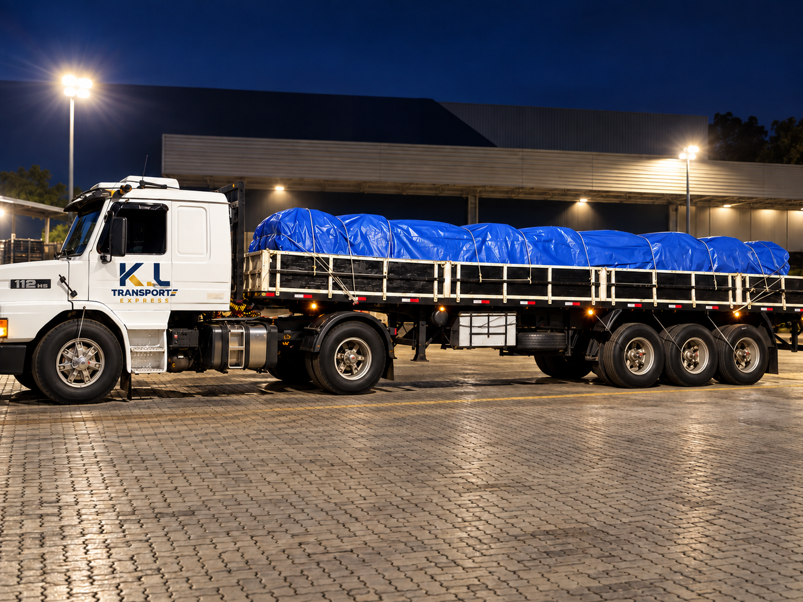
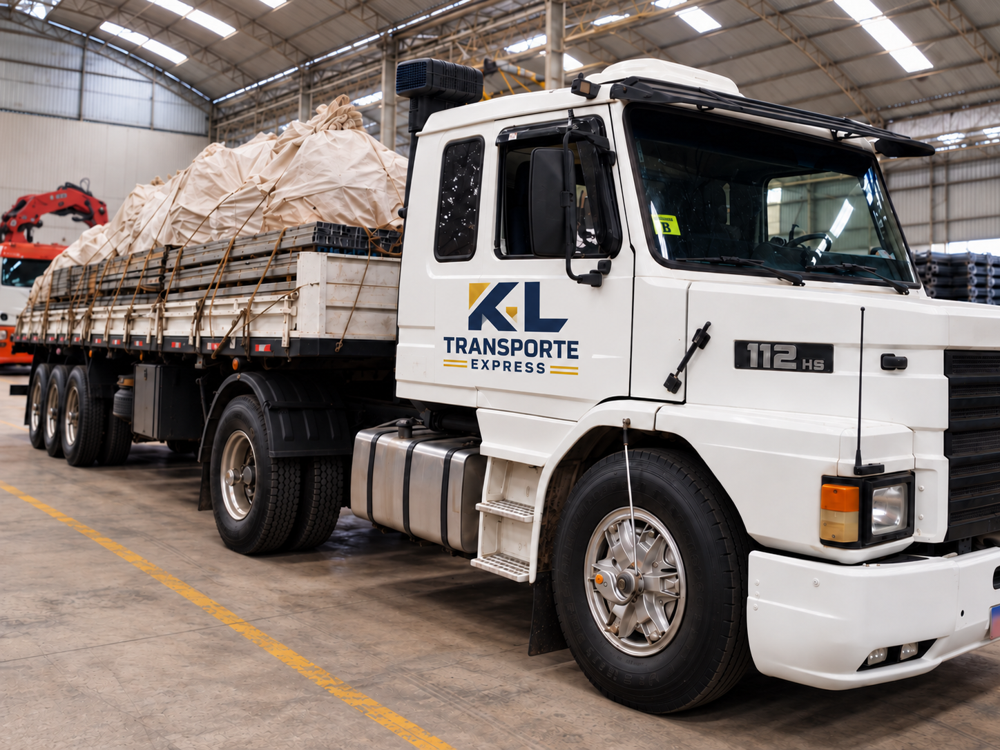
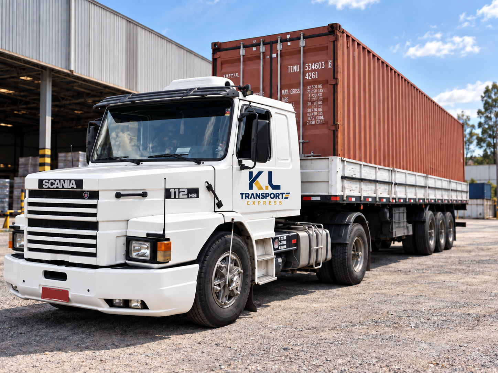
Frota e operação em campo.
Conheça alguns dos veículos e tipos de operação apresentados pela K.L Transporte Express.
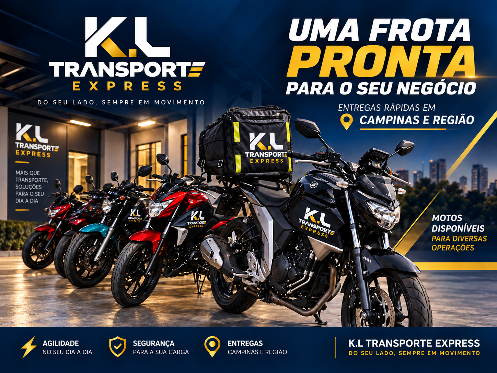
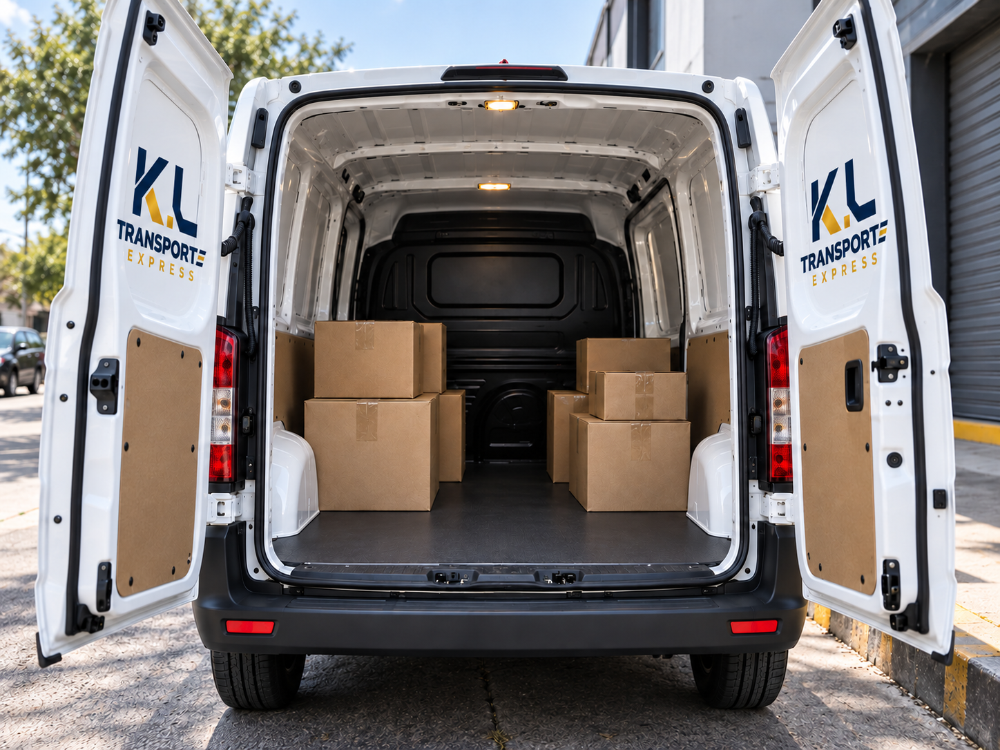
ÁREAS ATENDIDAS
Campinas, região e rotas sob consulta.
A K.L Transporte Express atende coletas e entregas em Campinas e cidades da região, além de operações intermunicipais e outras rotas sob consulta.
Campinas
Valinhos
Vinhedo
Hortolândia
Sumaré
Paulínia
Americana
Indaiatuba
Jaguariúna
Louveira
Itatiba
Nova Odessa
Monte Mor
Jundiaí
São Paulo
Outras cidades e rotas podem ser atendidas sob consulta.
Consultar minha rotaSua empresa precisa de coletas e entregas recorrentes?
Converse com a K.L sobre rotas programadas, transporte dedicado e atendimento empresarial.
DÚVIDAS FREQUENTES
Antes de pedir a cotação.
Respostas rápidas sobre atendimento, veículos, rotas e as informações que ajudam a organizar o transporte.
A K.L atende empresas?
Sim. A K.L realiza coletas, entregas recorrentes, transporte dedicado e operações programadas para empresas, conforme necessidade e disponibilidade.
Vocês fazem entregas urgentes?
Sim. A K.L atende demandas urgentes conforme disponibilidade, tipo de carga, veículo necessário e rota.
Quais veículos estão disponíveis?
A operação pode envolver motoboy, utilitários como Fiorino e picape, van/furgão e caminhão/carreta, de acordo com a necessidade do transporte.
A K.L atende outras cidades?
Sim. Além de Campinas e cidades da região, a K.L realiza rotas intermunicipais e outros destinos sob consulta.
Como solicito uma cotação?
O cliente pode preencher o formulário do site ou chamar diretamente pelo WhatsApp informando coleta, entrega e características da mercadoria.
Quais informações ajudam no orçamento?
Endereço de coleta, endereço de entrega, tipo de mercadoria e, quando aplicável, peso, dimensões e cuidados especiais.
Organize sua cotação.
Preencha apenas o que já souber. Coleta, entrega e mercadoria são os dados essenciais; os demais ajudam a K.L a entender melhor a operação.
Ainda não tem todos os dados?
Falar direto no WhatsApp
SUA EXPERIÊNCIA IMPORTA
Já utilizou a K.L?
Compartilhe sua experiência no Google. Sua avaliação ajuda outras pessoas e empresas a conhecerem o trabalho da K.L Transporte Express.